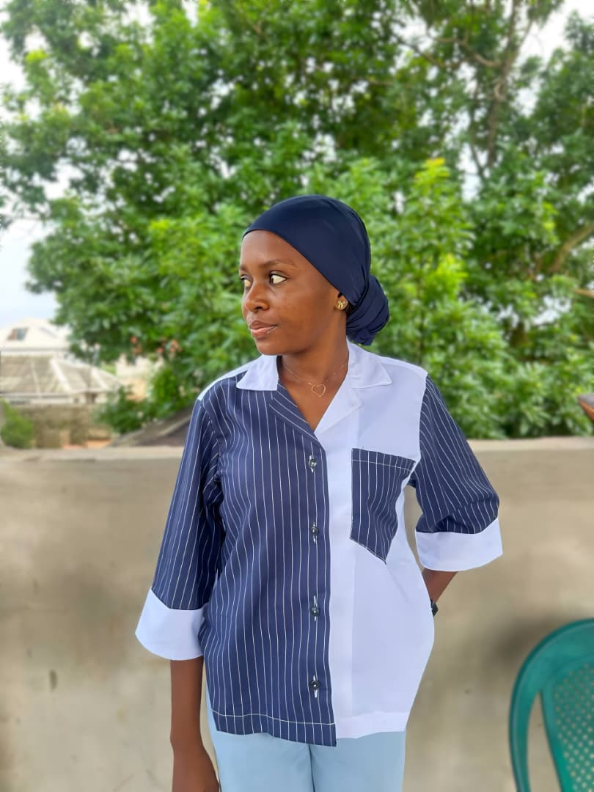
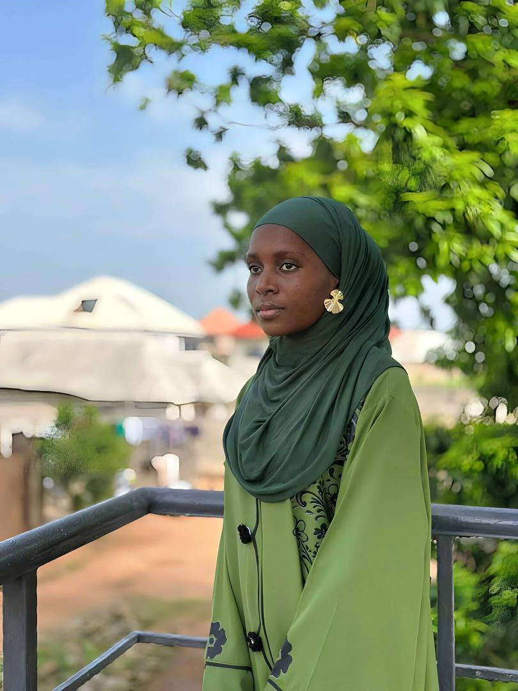
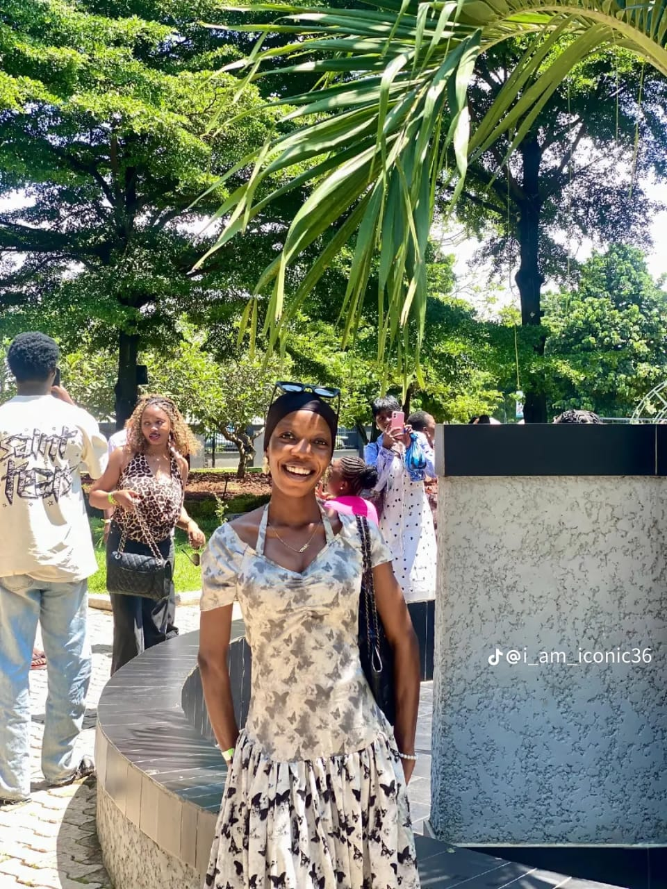
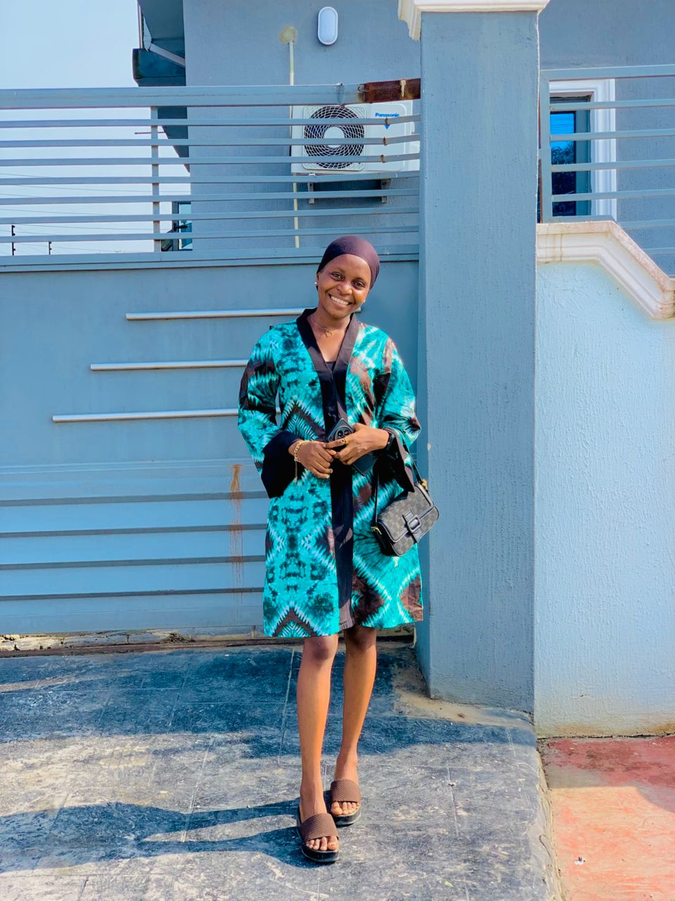
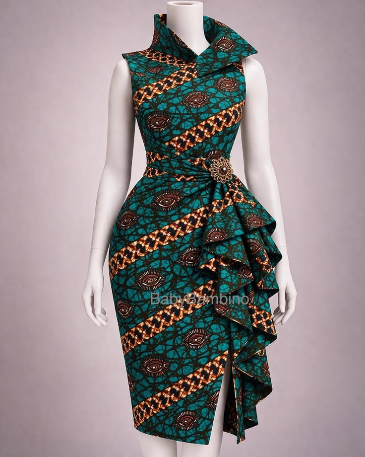
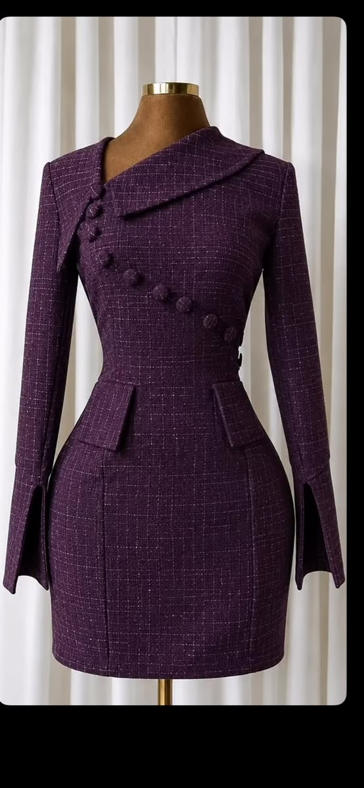
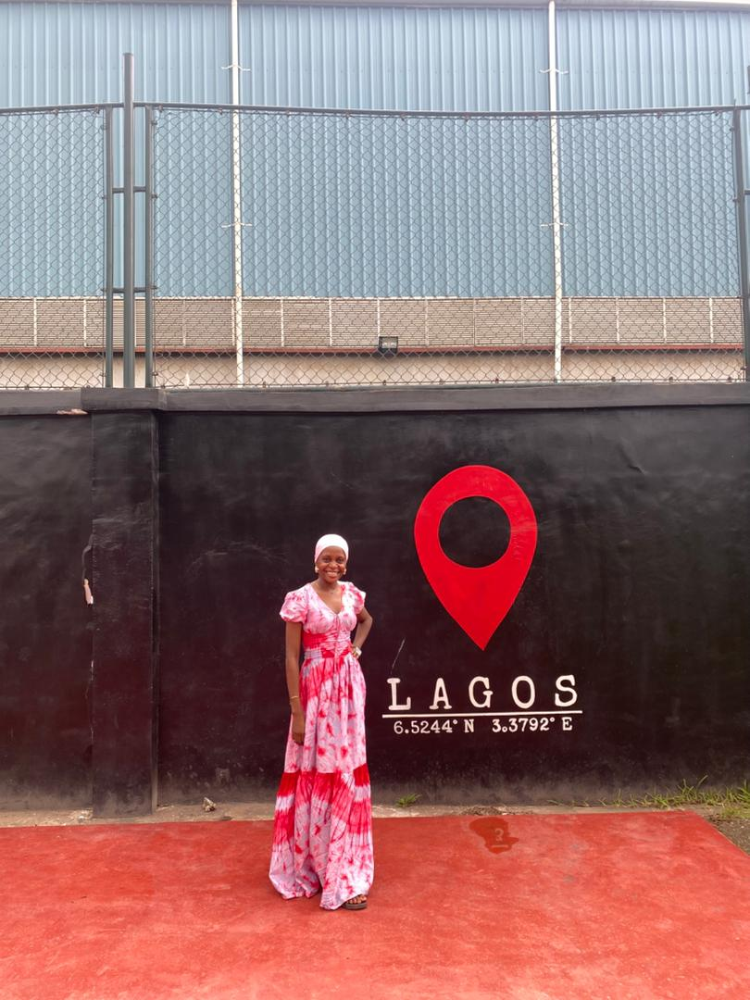
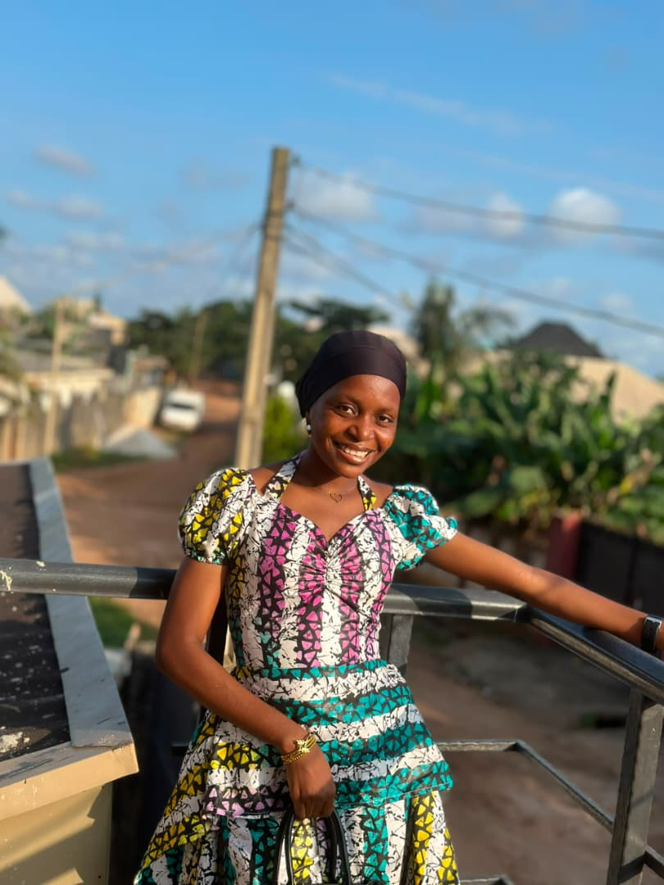

01↗
Form / Function
Tailored separates
SS26 / The New Ritual
Contemporary African couture made for the woman who enters a room and changes its rhythm.
My name is Adeoye Aishat Adetayo, a final-year Economics student at Lagos State University and the founder of Adetayo Stitches. I create comfortable, confident pieces that balance African identity with western influence.
Read my story →




New inTextured suiting · Aubergine
Crepe tailoring · Midnight
Printed cotton · Cobalt
Printed silk · Teal
Adetayo's journey began with a love for sewing during a JSS2 Home Economics practical. After disappointing tailor experiences, delayed deliveries, incorrect fabric shades, and outfits that missed the mark, she learned to create the clothes she imagined herself.
During her four-year wait for university admission, the hobby became Adetayo Stitches. Today she works across ready-to-wear, bespoke, Abayas, corporate outfits, styling, fabric selection, fittings, consultations, and personal styling for different body types.
Design philosophy
Thoughtful design, quality finishing, and African stories made wearable for today.


From the first sketch to the final stitch, our bespoke service brings your most considered ideas to life.
Start a conversation ↗Share the occasion, the feeling, the dream.
A private consultation and considered sketch.
Made slowly, delivered with intention.
Aisha understands that true luxury is not about being seen. It is about feeling completely, unmistakably yourself.
— Nneka O. / Lagos